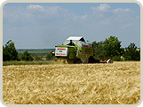

Наши услуги
Управление сельскохозяйственным предприятием (растениеводство).
Услуга по управлению сельскохозяйственным предприятием включает в себя решение комплекса задач, стоящих перед растениеводческим хозяйством, в том числе:
- Оформление прав хозяйства на землю и на имущество (движимое и недвижимое), завершение процесса распаевки.
- Реорганизация системы оперативного и бухгалтерского учета, ее компьютеризация с предоставлением владельцу хозяйства удаленного доступа к базам данных.
- Оптимизация производственной структуры хозяйства.
- Формирование планов севооборота хозяйства, включая перспективные, не менее чем на 5 лет.
- Формирование бюджета хозяйства и контроль над его соблюдением. Снижение издержек и непроизводственных расходов.
- Организация полного цикла производства сельскохозяйственной продукции растениеводства, включая уборку и хранение.
- Реализация выращенной продукции, в том числе, отправка на экспорт.
- Обеспечение сохранности материально-технических ресурсов, имущества и продукции хозяйства. Организация службы безопасности.
- Ведение капитального строительства, осуществление текущего ремонта капитальных зданий и сооружений.
- Проведение текущего и капитального ремонта техники предприятия.
- Ведение налогового учета.
- Получение государственных дотаций.
- Получение кредитов в банках Украины, сопровождение кредитных проектов.
- Организация и поддержка «обратной связи» с арендодателями земли. Продление договоров аренды земли в случае окончания срока их действия.
- Организация выкупа земельных участков после отмены моратория на куплю-продажу земель сельскохозяйственного назначения, если владелец хозяйства примет такое решение.
- Формирование и поддержка деловых отношений с органами местной власти. Создание положительного имиджа хозяйства на местном уровне.
- Создание и поддержка веб-сайта предприятия по желанию владельца хозяйства.
- Решение всевозможных текущих задач, возникающих в деятельности сельскохозяйственного предприятия.
Подбор и подготовка сельскохозяйственного предприятия (растениеводство) к покупке инвестором.

Услуга по подбору и подготовке сельскохозяйственного предприятия к покупке инвестором включает следующие этапы:
- Поиск хозяйства согласно критериям, определенным инвестором.
- Приведение в надлежащий вид прав хозяйства на землю и на имущество (движимое и недвижимое), а именно:
- инвентаризация прав хозяйства на землю и на имущество;
- подписание и государственная регистрация договоров аренды земель сельскохозяйственного назначения в новой редакции;
- завершение процесса распаевки (включая сопровождение дел в судебных инстанциях);
- приведение в порядок правоустанавливающих документов на движимое и недвижимое имущество. - Инвентаризация и оценка активов и пассивов хозяйства.
- Проведение предварительных переговоров с кредиторами о реструктуризации и отсрочке долгов.
- Оценка квалификации трудового коллектива хозяйства.
- Формирование отчета для инвестора с рекомендациями.